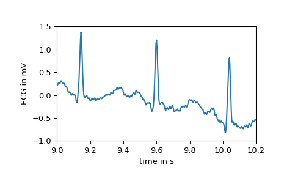
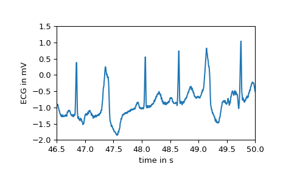
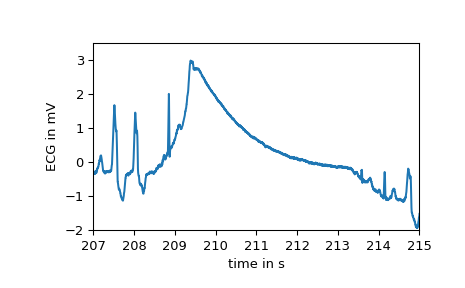
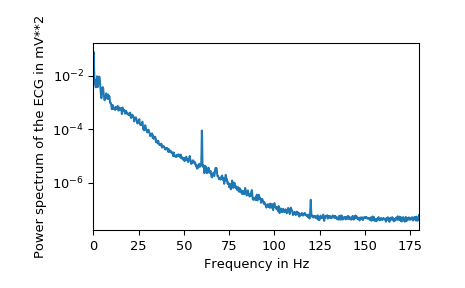

scipy.misc.electrocardiogram¶
-
scipy.misc.electrocardiogram()[source]¶ Load an electrocardiogram as an example for a 1-D signal.
The returned signal is a 5 minute long electrocardiogram (ECG), a medical recording of the heart’s electrical activity, sampled at 360 Hz.
- Returns
- ecgndarray
The electrocardiogram in millivolt (mV) sampled at 360 Hz.
Notes
The provided signal is an excerpt (19:35 to 24:35) from the record 208 (lead MLII) provided by the MIT-BIH Arrhythmia Database [1] on PhysioNet [2]. The excerpt includes noise induced artifacts, typical heartbeats as well as pathological changes.
New in version 1.1.0.
References
- 1
Moody GB, Mark RG. The impact of the MIT-BIH Arrhythmia Database. IEEE Eng in Med and Biol 20(3):45-50 (May-June 2001). (PMID: 11446209); DOI:10.13026/C2F305
- 2
Goldberger AL, Amaral LAN, Glass L, Hausdorff JM, Ivanov PCh, Mark RG, Mietus JE, Moody GB, Peng C-K, Stanley HE. PhysioBank, PhysioToolkit, and PhysioNet: Components of a New Research Resource for Complex Physiologic Signals. Circulation 101(23):e215-e220; DOI:10.1161/01.CIR.101.23.e215
Examples
>>> from scipy.misc import electrocardiogram >>> ecg = electrocardiogram() >>> ecg array([-0.245, -0.215, -0.185, ..., -0.405, -0.395, -0.385]) >>> ecg.shape, ecg.mean(), ecg.std() ((108000,), -0.16510875, 0.5992473991177294)
As stated the signal features several areas with a different morphology. E.g., the first few seconds show the electrical activity of a heart in normal sinus rhythm as seen below.
>>> import matplotlib.pyplot as plt >>> fs = 360 >>> time = np.arange(ecg.size) / fs >>> plt.plot(time, ecg) >>> plt.xlabel("time in s") >>> plt.ylabel("ECG in mV") >>> plt.xlim(9, 10.2) >>> plt.ylim(-1, 1.5) >>> plt.show()
After second 16, however, the first premature ventricular contractions, also called extrasystoles, appear. These have a different morphology compared to typical heartbeats. The difference can easily be observed in the following plot.
>>> plt.plot(time, ecg) >>> plt.xlabel("time in s") >>> plt.ylabel("ECG in mV") >>> plt.xlim(46.5, 50) >>> plt.ylim(-2, 1.5) >>> plt.show()
At several points large artifacts disturb the recording, e.g.:
>>> plt.plot(time, ecg) >>> plt.xlabel("time in s") >>> plt.ylabel("ECG in mV") >>> plt.xlim(207, 215) >>> plt.ylim(-2, 3.5) >>> plt.show()
Finally, examining the power spectrum reveals that most of the biosignal is made up of lower frequencies. At 60 Hz the noise induced by the mains electricity can be clearly observed.
>>> from scipy.signal import welch >>> f, Pxx = welch(ecg, fs=fs, nperseg=2048, scaling="spectrum") >>> plt.semilogy(f, Pxx) >>> plt.xlabel("Frequency in Hz") >>> plt.ylabel("Power spectrum of the ECG in mV**2") >>> plt.xlim(f[[0, -1]]) >>> plt.show()
